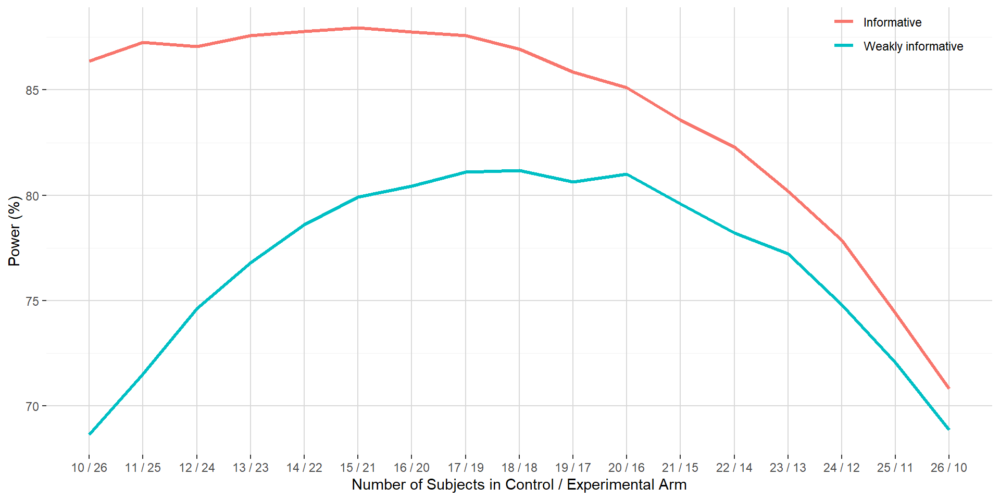

Sample size, allocation ratio and prior information
Goal of this blog post is to illustrate on the normal context the impact of prior information on the optimal sample size and allocation ratio between a control and an experimental arm to target specific set of operational characteristics in a superiority setting.
The blog post will be structured as followed. First, sample size in a weakly informative setting with equal allocation will be presented in order to target some operational characteristics. Then, under the same overall sample size, varying allocation ratio between the control and the experimental arm will be evaluated in the same weakly informative setting and in presence of prior information for the control arm mean. Finally, overall sample size and allocation ratio will be optimized in presence of the same informative prior for the control arm mean.
This blog post will not cover the concept of Bayesian assurance nor stress out techniques to handle potential data-prior conflict.
1. Introduction
1.1. General setting
Let’s assumed that we are interested in evaluating the benefit of being under an experimental product versus a control product on a normally distributed endpoint \(y\). To do so, participants will be randomized and assigned to receive either the control or the experimental product.
In order to quantitatively evaluate the benefit of receiving the experimental product versus the control product, let’s consider the following model:
\[ \begin{eqnarray} y_{ij} | \mu_{i},\tau_{i} &\sim& \mathcal{N}\left(\mu_{i}, \tau_{i}^{-1}\right) \\ \mu_{i} &\sim& \mathcal{N}\left(m_{i},p_{i}^{-1}\right) \\ \tau_{i} &\sim& \mathcal{Ga}\left(a_{i}, b_{i}\right) \end{eqnarray} \] where:
- \(y_{ij}\) is the \(j\)-th observation in the \(i\)-th arm of the variable of interest, \(i=1\) is for experimental arm and \(i=2\) for the control arm, with \(j=1, ..., n_{i}\) where \(n_{i}\) is the number of observations in the \(i\)-th arm;
- \(\mu_{i}\) and \(\tau_{i}\) are the mean and precision (inverse-variance) in the \(i\)-th arm of the normally distributed variable of interest;
- \(m_{i}\) and \(p_{i}\) are the mean and precision of the normal prior distribution for the mean \(\mu_{i}\);
- \(a_{i}\) and \(b_{i}\) are the shape and rate of the gamma prior distribution for the precision \(\tau_{i}\).
The choice of the prior distribution for the mean parameters \(\mu_{i}\) and the precision parameters \(\tau_{i}\) will not be discussed in this blog post. Values for those parameters will be set in each subsequent section.
The posterior probability \(P\left(\delta = \mu_{1} - \mu_{2} \gt 0 | \mathcal{D}\right)\) indicates the level of evidence that the mean parameter in the experimental arm is larger than the mean parameter in the control arm given the observed set of data \(\mathcal{D}\).
1.2. Assumptions and target operational characteristics
Sample size and power calculation will be done via simulations. The following assumptions and target operational characteristics will be considered through the subsequent section:
- A total of 20000 datasets will be generated for each simulation scenario;
- Normal data will be generated using the rnorm function, with:
- mean set to 7 in the experimental arm and 5 in the control arm;
- standard deviation set to 2 in the experimental arm and 2 in the control arm;
- For a given simulated dataset, experimental arm will be stated as superior to the control arm if \(P\left(\delta = \mu_{1} - \mu_{2} \gt 0 | \mathcal{D}\right)\) is larger than 0.975;
- For a given sample size, power will be computed as the proportion over the 20000 simulated datasets for which superiority of the experimental arm over the control arm can be stated;
- When sample size is to be calculated for a target power (e.g. 80 %), it will represent the smallest sample size out of a search grid for which the power is above this target.
1.3. Sample size with equal allocation ratio with weakly informative priors
As mentioned in Section 1.2, sample size calculation is based on a search grid. With respect to the prior distribution for \(\mu_{i}\) and \(\tau_{i}\), the following parameters are considered:
- \(m_{i} = 0\) and \(p_{i} = 10^{-6}\), leading to a very flat normal prior for the mean parameter in the control and experimental arm;
- \(a_{i} = b_{i} = 10^{-6}\), leading to a prior for the precision parameter with mean 1 and variance 106 in the control and experimental arm.
Those parameters will lead to a weakly informative setting close to the Jeffreys priors.
Given those assumptions and parameters, 18 subjects in the control arm and 18 subjects in the experimental arm corresponds to the smallest overall sample size in a 1:1 allocation ratio for which the estimated power is above the target of 80 %.
1.4. Software
Sample of the posterior distribution for the mean parameters have been obtained using package rstan (Version 2.26.1, Stan Development Team (2018)).
2. Impact of allocation ratio with weakly informative and informative priors
In order to evaluate the impact of the allocation ratio, the overall sample size will be set to 36 subjects, but sample size in each arm will vary between 10 and 26 subjects.
With respect to prior information, the followings will be considered:
- Weakly informative prior:
- \(m_{i} = 0\) and \(p_{i} = 10^{-6}\), leading to a very flat normal prior for the mean parameter in the control and experimental arm;
- \(a_{i} = b_{i} = 10^{-6}\), leading to a prior for the precision parameter with mean 1 and variance 106 in the control and experimental arm;
- Informative prior;
- \(m_{1} = 0\) and \(p_{i} = 10^{-6}\) for the prior distribution of the mean in the experimental arm;
- \(m_{2} = 5\) and \(p_{i} = 1.0\) for the prior distribution of the mean in the control arm;
- \(a_{i} = b_{i} = 10^{-6}\), leading to a prior for the precision parameter with mean 1 and variance 106 in the control and experimental arm.
Figure below shows for a fixed sample size of 36 subjects the power estimated via simulation against the number of subjects in the control and experimental arm.

In the weakly informative setting, the power curve increases until the control to experimental allocation probability is at 0.5 and then decreases back in a symmetrical shape. This is a known feature in standard frequentist sample size calculation where optimal sample size is achieved with a 1:1 allocation ratio.
In the informative setting, the power curve is always above the power curve of the weakly informative setting. This shows that the informative prior for the mean parameter in the control arm allows to increase the chance to state that the experimental arm is superior to the control arm. This can be explained by the prior for the mean parameter in the control arm being aligned with the data generation process. In addition, the power curve is no more centered around the 0.5 allocation probability. Maximum power is attained with 15 and 21 subjects in the control and experimental arm. This illustrates the “data augmentation” that benefits directly to the control arm (via a narrower credible interval for the mean parameter) and then indirectly for the comparison against the experimental arm.
3. Optimal sample size and allocation ratio with informative priors
Section 2 has shown that overpowered situation occurred in presence of the informative prior for the mean parameter in the control arm. In this section, the sample size will be proposed while targeting a power of 80 % with the same informative prior than the one used in the previous section.
Figure below shows the power curve when overall sample size is set at 29 subjects against the number of subjects in the control and experimental arm.
Versus overall sample size proposed in Section 1.3, a decrease of 7 subjects can be obtained when integrating the prior information for the mean parameter in the control arm while still having the same target power. This represent a 19.4 % reduction in overall sample size. With 10 subjects in the control arm and 19 subjects in the experimental arm, power is maximal.
4. Conclusion
In this blog post, we evaluated the impact of including prior information in the control arm on optimal overall sample size and allocation ratio in a superiority setting for normally distributed data. In absence of prior-data conflict, the introduction of prior information allows either to increase the power versus alternative approaches not considering this prior information or to decrease the overall sample size while still maintaining the same target power.
Post created on 2020-10-29. Last update on 2020-10-29.
References


Jaeger Consulting © 2022